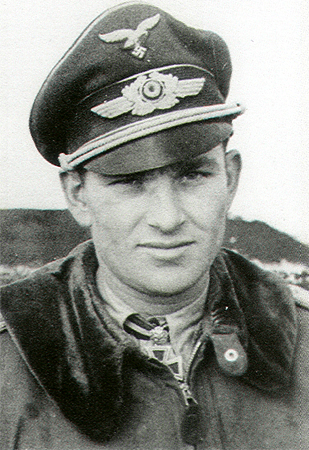
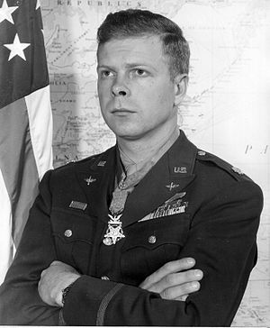
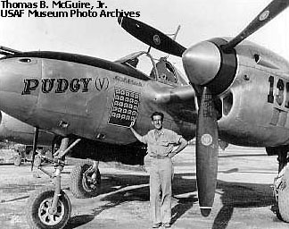
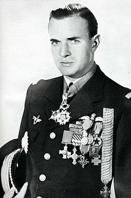

Erich Hartmann (né le 19 avril 1922 à Weissach et mort le 20 septembre 1993) est un pilote de chasse et un as allemand de la Seconde Guerre mondiale. Son palmarès de 352 avions ennemis abattus entre novembre 1942 et mai 1945 est le plus élevé jamais obtenu par un pilote de chasse.
Gerhard Barkhorn (né le 20 mars 1919 à Königsberg en Prusse-Orientale et mort le 8 janvier 1983 à Frechen), était un pilote de chasse allemand, officier durant la Seconde Guerre mondiale puis général dans la Bundeswehr. Il fut l'un des grands as aériens de la Seconde Guerre mondiale (301 victoires).
Richard « Dick » Ira Bong, né le 24 septembre 1920 et mort le 6 août 1945, était un pilote de chasse américain lors de la Seconde Guerre mondiale. Avec 40 victoires en combat aérien à son actif, c'est le plus grand as de l'aviation américaine
Thomas Buchanan McGuire (1er août 1920 – 7 janvier 1945) fut l’un des pilotes de combat américains les plus décorés de la Seconde Guerre mondiale. Avec trente-huit victoires au moment de sa mort, il demeure le second plus grand as américain de la guerre, derrière Richard Bong.
Pierre-Henri Clostermann, né le 28 février 1921 à Curitiba (Brésil), mort le 22 mars 2006 à Montesquieu-des-Albères (Pyrénées-Orientales), est un aviateur français qui s'est distingué au cours de la Seconde Guerre mondiale.
pour retourné au menue ;)